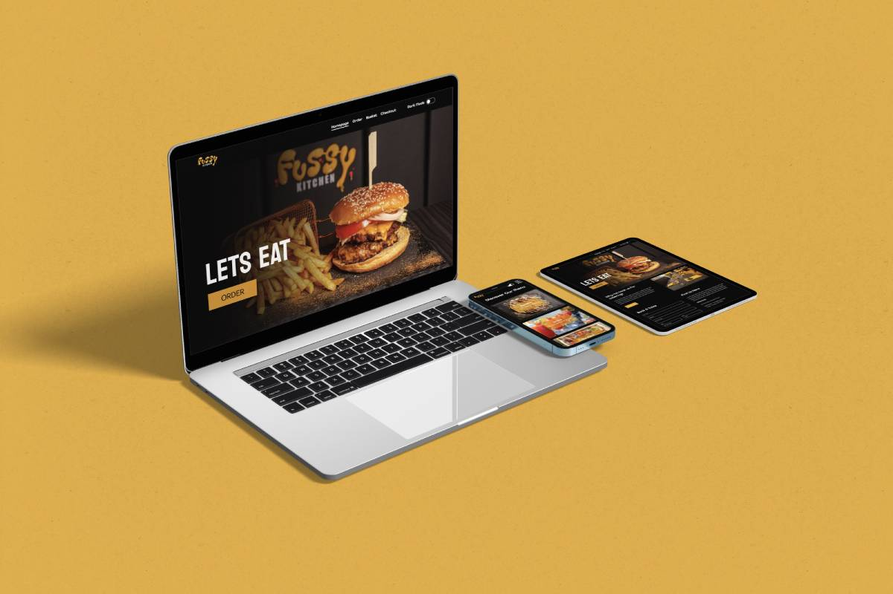
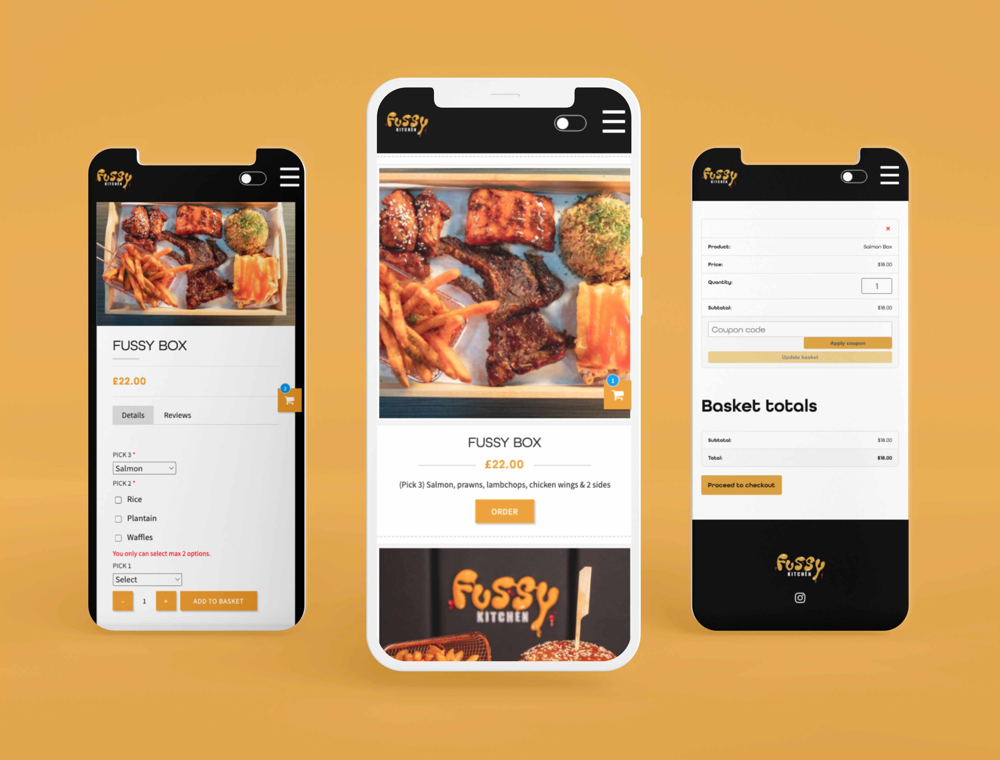

The client requested that a website be created that would allow
customers to place orders online. It was my responsibility to design a
user-friendly website that allowed users to simply place orders on the
platform.
The website is built with Wordpress and Woo commerce, allowing people
with little to no online experience to simply modify the menu and
website.

